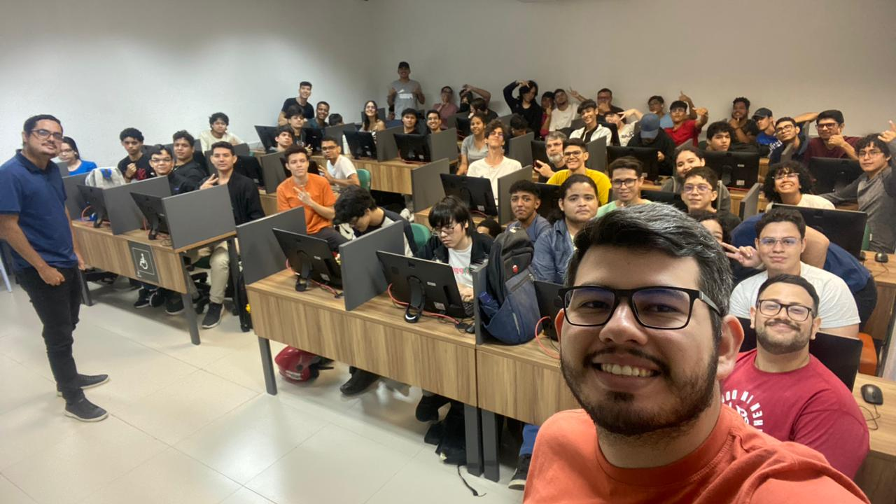

Semana Ubíqua

Data Science e Visualização de Dados com Igor Falcão
Nos últimos anos, a área de Data Science tem ganhado destaque como uma das mais influentes e revolucionárias no cenário tecnológico e empresarial. Com o crescimento exponencial dos dados e a necessidade de tomar decisões baseadas em evidências, a ciência de dados se tornou uma ferramenta essencial para entender e explorar o mundo complexo em que vivemos. Dentro desse campo, a visualização de dados emerge como uma das práticas mais cruciais, ajudando a transformar dados brutos em insights compreensíveis e acionáveis. Igor Falcão, um renomado especialista em Data Science e visualização de dados, é uma figura chave nessa jornada.
História da Universidade
A história de vida de Janguiê Diniz parece revelar uma identidade natural com as histórias, os caminhos ou mesmo os sonhos de cada um dos mais de 150 mil alunos que circulam diariamente pelas instituições de ensino do Grupo Ser Educacional, fundado por ele. Da infância pobre e rural em pequenas cidades do interior que sequer aparecem no mapa do país; da rotina sacrificada na adolescência, com noites de renúncia da juventude e dividindo-se entre o trabalho e a escola; passando horas e horas debruçado sobre livros; e da persistência nos momentos de fraqueza; vieram a vontade incansável de vencer na vida e de vencer a vida.
José Janguiê Diniz nasceu em 21 de março de 1964, no distrito de Santana dos Garrotes, na Paraíba. Era um dos sete filhos de Lourdes e João. Aos seis anos, sua família deixou o Sertão paraibano e seguiu para o centro-oeste, para o município de Naviraí, no Mato Grosso do Sul. Aos 8 anos, Janguiê montou seu primeiro “empreendimento”: uma caixa de engraxate. Pouco depois, trocou a graxa nos sapatos, pela venda de laranjas. Até que os seus pais decidiram mais uma vez mudar de região. Seguiram então para Pimenta Bueno, em Rondônia. Mesmo com tantas mudanças, os pais sempre o incentivaram a estudar.
Sice Sicuryt

Sice Sicuryt: O Evento de Segurança Cibernética Organizado pela Devs Norte
Em um mundo onde a segurança digital se torna cada vez mais crucial, a Devs Norte se destaca ao promover o "Sice Sicuryt", um evento inovador focado na segurança cibernética. Com o crescimento contínuo das ameaças digitais e a crescente complexidade dos sistemas de informação, o Sice Sicuryt surge como uma plataforma essencial para a discussão, educação e aprimoramento das práticas de segurança em um ambiente tecnológico em constante evolução.
Semana Ubíqua

Semana Ubíqua: Aula de Manutenção de Computadores com Hermínio Paixão
A "Semana Ubíqua" chegou trazendo uma série de atividades e eventos que refletem o espírito inovador e a paixão pela tecnologia que caracterizam nossa instituição. Entre os destaques da semana, a aula de manutenção de computadores com o renomado especialista Hermínio Paixão se destacou como um momento de aprendizado e inspiração para todos os participantes.